Are vehicles in Chicago susceptible targets of crime?
This report outlines the source code that was used to determine the susceptibility of vehicles in Chicago.
The report is broken down into 4 smaller research questions each with their own analyses.
When are the vehicles stolen?
How many vehicles are stolen?
Which communities will have a vehicle stolen from it?
Do communities have the different arrest rates for vehicle thefts?
1. When are vehicles stolen?
We will explore the subquestion: What is the probability that a vehicle theft in Chicago occurs at night? Define ‘night’ in this question as between 6pm and 6am.
Read in the Chicago crime dataset. The data has already been filtered to only include vehicle thefts in 2026, since that is our subject of interest. Each row has a unique ID and case number, and the rest of the columns contain other details about the crime.
df <-read.csv("../data/chicago_vehicle_theft_crimes_2026.csv")# add a column converting Date to DateTimedf <- df %>%mutate(DateTime =strptime(Date, format ="%m/%d/%Y %I:%M:%S %p"))head(df,3)
ID Case.Number Date Block IUCR
1 14118381 JK158640 02/22/2026 12:00:00 AM 063XX S MOZART ST 920
2 14118195 JK158333 02/22/2026 12:00:00 AM 051XX N CALIFORNIA AVE 910
3 14118379 JK158602 02/21/2026 11:30:00 PM 006XX N FRANKLIN ST 910
Primary.Type Description Location.Description Arrest Domestic
1 MOTOR VEHICLE THEFT ATTEMPT - AUTOMOBILE STREET false false
2 MOTOR VEHICLE THEFT AUTOMOBILE STREET false false
3 MOTOR VEHICLE THEFT AUTOMOBILE STREET false false
Beat District Ward Community.Area FBI.Code X.Coordinate Y.Coordinate Year
1 823 8 15 66 7 1158470 1862494 2026
2 2031 20 40 4 7 1156765 1934163 2026
3 1831 18 42 8 7 1174220 1904299 2026
Updated.On Latitude Longitude Location
1 03/01/2026 04:09:12 PM 41.77842 -87.69459 (41.778420097, -87.69459002)
2 03/01/2026 04:09:12 PM 41.97512 -87.69890 (41.975121537, -87.698898525)
3 03/01/2026 04:09:12 PM 41.89280 -87.63560 (41.892800977, -87.635604802)
DateTime
1 2026-02-22 00:00:00
2 2026-02-22 00:00:00
3 2026-02-21 23:30:00
Exploring the data
Let’s take a preliminary look at the data to get an idea of what we’re working with. What does the basic distribution of vehicle thefts look like across the hours of the day?
df %>%mutate(hour =hour(DateTime),period =ifelse(hour >=18| hour <6, "Night", "Day")) %>%count(hour, period) %>%ggplot(aes(x =factor(hour), y = n, fill = period)) +geom_col()+labs(title ="2026 Vehicle Thefts by Hour of Day",x ="Hour of Day",y ="Count" )
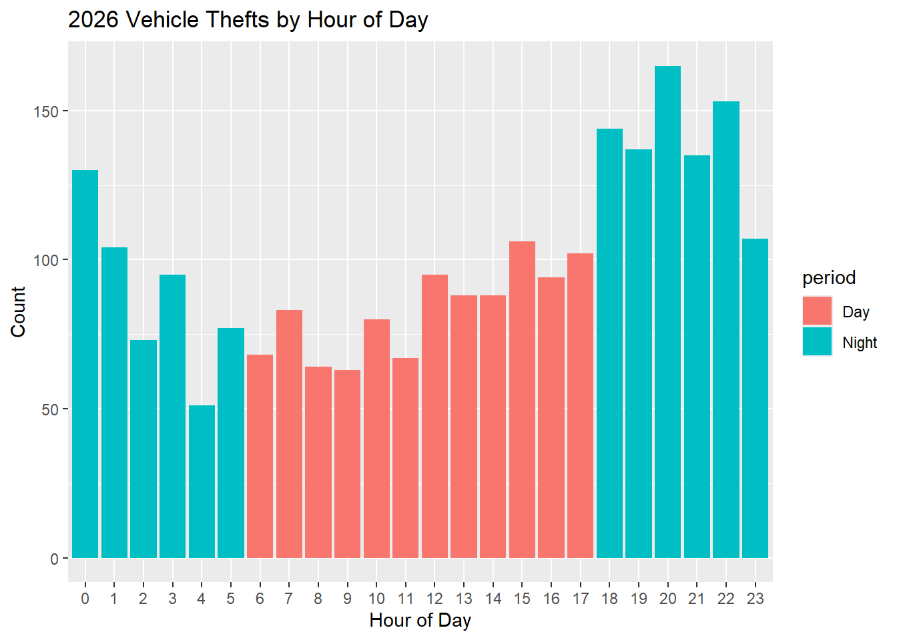
We see that car thefts generally tend to be more common at night, between 6pm and up until 3am. Indeed, the volume of the blue columns outweighs the pink columns. So we know \(\pi\) will likely be greater than 0.5. But by how much?
Building a prior
To build a prior, we look at 2024 vehicle theft data as reported by the FBI National Incident-Based Reporting System, which reported that out of approximately 750,000 vehicle thefts that year, around 52.4% occurred between 6pm and 6am.
We assign a Beta(104, 96) prior to \(\pi\), the probability a vehicle theft occurs at night, putting the mean at 0.52 and most values between 0.45 and 0.59.
A Beta prior is a good choice for this data because it is defined on 0 to 1, the same domain as a probability. The Beta distribution is also conjugate to the Binomial likelihood, so we will be able to produce an informative Beta posterior given data.
summarize_beta(104, 96) # mean at 0.52, mode at 0.52
mean mode var sd
1 0.52 0.520202 0.001241791 0.03523906
qbeta(c(0.025, 0.975), 104, 96) # 95% credible interval between 0.45 and 0.59
[1] 0.4508169 0.5888041
plot_beta(104, 96) # visualize the distribution
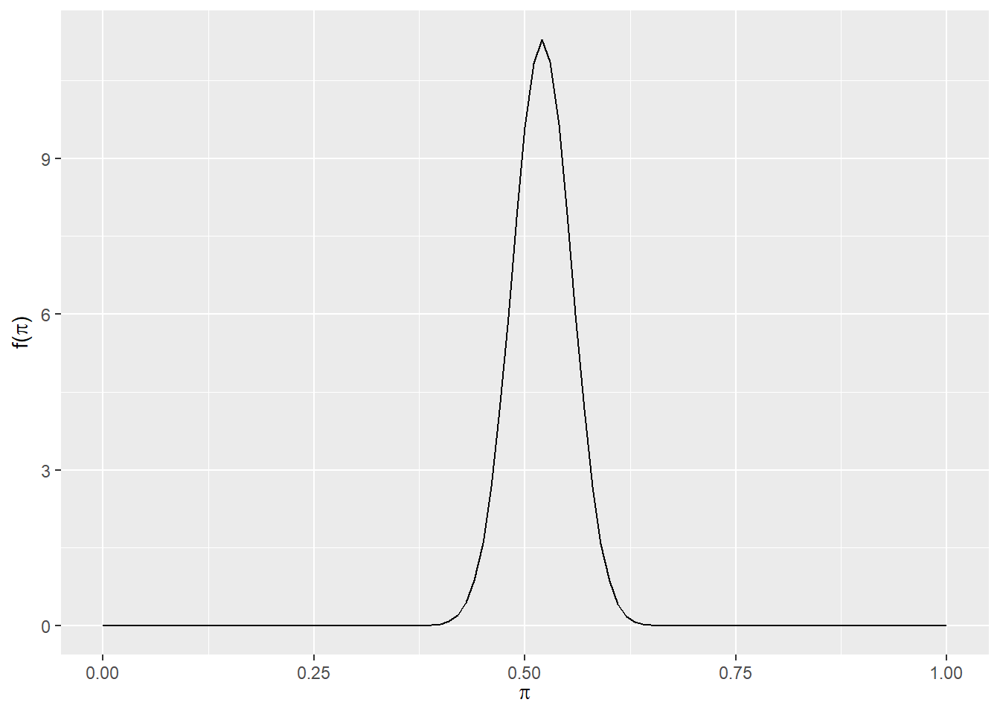
Likelihood
The Binomial model for the number of vehicle thefts that took place at night is \(Y|\pi \sim Bin(2369, \pi)\). n=2369 because that is the number of rows in our dataset.
nrow(df)
[1] 2369
From our data, we observe that Y=1371 of vehicle thefts took place at night.
Because of our large sample size, the posterior is “weighted” more toward the likelihood. In our data we observed a greater \(\pi\) compared with our prior, so the mean of the posterior is pulled in the direction of the data.
model alpha beta mean mode var sd
1 prior 104 96 0.5200000 0.5202020 1.241791e-03 0.035239056
2 posterior 1475 1094 0.5741534 0.5742111 9.513668e-05 0.009753804
We confirm that our posterior has a higher mean and mode than our prior. So based on the data we observed, the probability that a vehicle theft occurs at night is higher than we originally thought, around 0.57 compared with 0.52.
Grid Approximation
Let’s approximate the posterior using grid approximation. First split the continuum of possible \(\pi\) values onto a finite grid of 101 values.
grid_data <-data.frame(pi_grid =seq(from =0.50, to =0.61, length =101))
Encode the Beta(104, 96) prior and Binomial(2369, \(\pi\)) likelihood with Y=1371 at each \(\pi\) in pi_grid.
Warning: Removed 2 rows containing missing values or values outside the scale range
(`geom_bar()`).
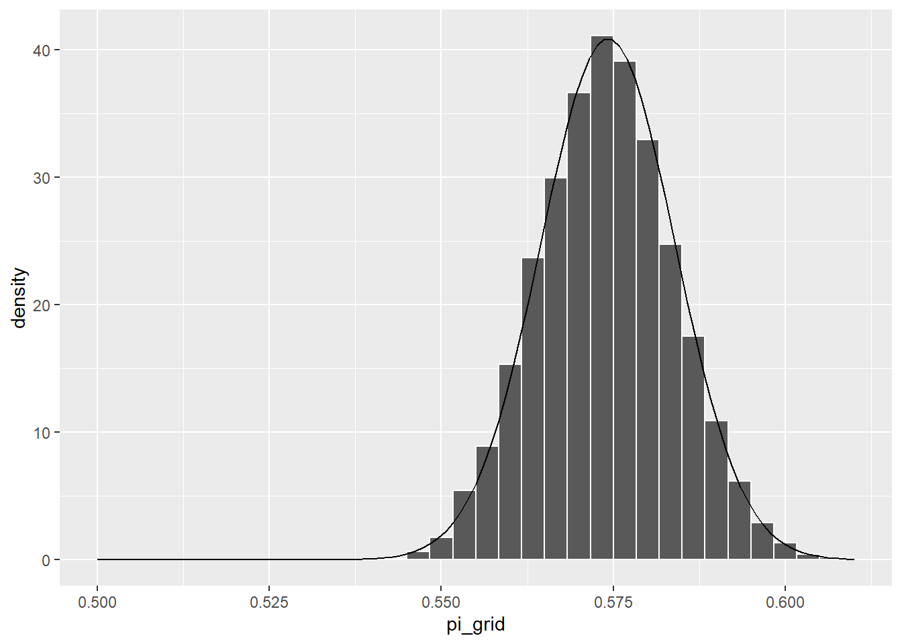
This sample aligns much better with the actual posterior pdf, and we once again conclude that the probability that a vehicle theft occurs at night is around 0.57, with a credible interval between 0.56 and 0.59.
Comparing Weekends and Weekdays
Since people’s activities tend to be different on weekdays and weekdays, let’s compare the distribution of vehicle thefts by those two groups. We use the beta (104, 96) prior.
The posterior means indicate that nighttime vehicle thefts are slightly more likely on weekends (0.578) than on weekdays (0.566). However, the difference is small so while there may be a slight increase in risk on weekends, it is not a dramatic shift. The credible intervals also have significant overlap, so we can infer that the difference is not significant.
Informative results on the distribution of times of vehicle theft could potentially help people protect their personal vehicles by being wary of dangerous times to leave vehicles unlocked or out. Results could also help law enforcement enforce regulations to limit vehicle theft crimes, such as increasing street lighting at especially vulnerable times of day.
With more resources and time, I would like to conduct a deeper analysis of vehicle theft times with 2 time categories, perhaps hour-to-hour or between months. A limitation of my analysis it does not provide detailed insight outside of the proportion of vehicles stolen between 6am and 6pm and outside of that period.
2. How many vehicles will be stolen in Chicago?
In this section we will break down our statistical modelling for determining the number of stolen vehicles in Chicago for a new day.
Exploring daily theft counts
First we read the data set containing all currently reported vehicle thefts since the start of the 2026 year.
df <-read.csv("../data/chicago_vehicle_theft_crimes_2026.csv")# mdy_hms handles the string formatting "mm/dd/yyyy hh:mm:ss AM" automaticallydf$Date <-mdy_hms(df$Date)# Convert the date to a numeric date since the start of the datasetdf$day_numeric <-as.numeric(difftime(df$Date, min(df$Date), units ="days"))# Convert the numeric dates to discrete numbers # Remove the incomplete current daydf <- df %>%mutate(day_n =floor(day_numeric)) %>%filter(day_n !=52)
Then grouping the reports by day and counting them, allows us to create a visualization to judge for any noticeable trends to model.
# Aggregate the counts of reported theft casesdaily_counts <- df %>%group_by(day_n) %>%summarize(theft_count =n())# Plot the counts over days to looks for correlationggplot(daily_counts, aes(x = day_n, y = theft_count)) +geom_line(color ="steelblue") +# Line shows the trendgeom_point(color ="darkblue") +# Points show individual dayslabs(title ="Daily Frequency of Vehicle Thefts",x ="Day Number",y ="Count of Thefts") +theme_minimal()
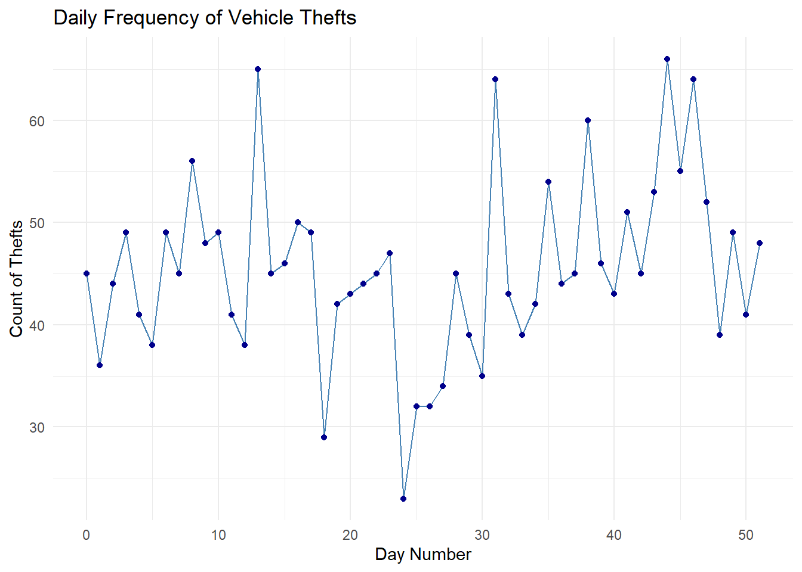
Generally from the plot there is no specific trend from day-to-day which makes using an independence assumption more plausible.
Plotting the histograms of the reported numbers will show if mostly the numbers are centered around a similar value.
# Treating all days as independent events we can construct a density plotggplot(daily_counts, aes(x = theft_count)) +geom_histogram(fill ="steelblue", color ="black", binwidth =3) +labs(title ="Distribution of Daily Theft Counts",x ="Number of Thefts per Day",y ="Counts") +theme_minimal()
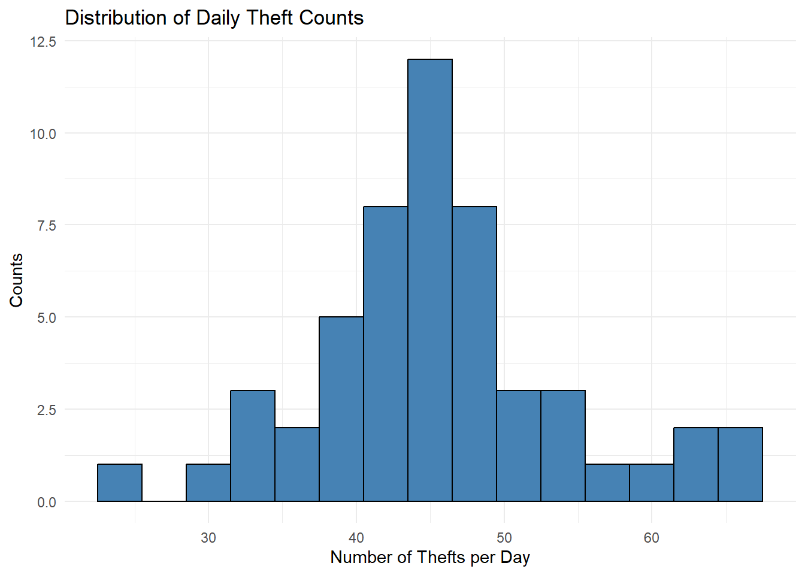
Looking at the plot there is relatively high variance in the daily reported number of stolen vehicles in Chicago, however the number is generally centered around the 40-50 range, indicating that on average days have similar numbers of cars stolen.
Statistical Model
To model these counts we propose discrete random variables that range from 0 to infinity, which are independent and have the same mean. One type of random variable that can model these conditions is the Poisson random variable
\[\text{Let } Y_i\text{ represent the number of car thefts in on a day }i:\]
\[Y_i|\lambda \sim Poisson(\lambda)\]
Furthermore the rate of the Poisson random variable can be modeled as a Gamma random variable.
\[ \text{Let }\lambda \text{ represent the daily car theft rate}: \]
\[\lambda \sim Gamma(\alpha, \beta)\]
Defining a Prior
From research into priors the annual car theft rate in Chicago is 8.25 for every 1000 people. Given that Chicago has a population of around 2.72 million, that leads to 22440 total stolen cars per year in Chicago! (Insurance Information Institute)
Since we are using the independent and identically distributed assumption for the car theft rate in Chicago, we expect that the expected rate should be close to one 365th of the annual rate, which leads to a rate of 61.44.
For the variance of the rate, the monthly 5 year counts range from 630 to 3186 which translates into an average daily rate range of 21 to 106 and since each month in a 5 year range accounts for one 60th of the data, I suggest that choosing a distribution that has tail probabilities around 0.0166, for either or possibly both tails (City of Chicago). However a Gamma distribution is not flexible enough to model all three constraints simultaneously so I decided to only use the left tail probability assumption. In other words the 0.0166th quantile of the prior Gamma distribution should be 21.
\[\text{From our assumption that the average rate should be 61.44: }\]
In R we can use the uniroot function to computationally solve the root for us:
# Targets for gammatarget_mean <-61.44target_tail_v <-21target_tail_p <-1/60# Defining g(alpha)g <-function(alpha) { beta <- alpha / target_mean tail_p <-pgamma(target_tail_v, shape = alpha, rate = beta)return(tail_p - target_tail_p)}# Solving the root of gsolution <-uniroot(g, lower =0.01, upper =100)# Substituting in the values for alpha and betaprior_alpha <- solution$rootprior_beta <- prior_alpha / target_meanprint(paste("Alpha:", round(prior_alpha, 4)))
[1] "Alpha: 6.2116"
print(paste("Beta:", round(prior_beta, 4)))
[1] "Beta: 0.1011"
Visualizing the constructed prior:
plot_gamma(prior_alpha, prior_beta)
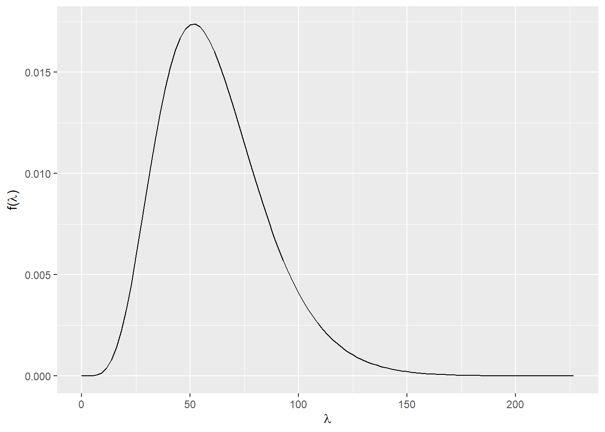
Checking our initial constraint of a mean rate of 61.44
# Get the mean of the distributionsummarize_gamma(prior_alpha,prior_beta)$mean
[1] 61.44
and a high enough variance to make rates with smaller than the minimum average rates to not account for more than 0.0166 probability.
# Get the quantiles of the minimum and maximum average rates in the past 5 yearspgamma(c(21,106),prior_alpha,prior_beta)
[1] 0.0166669 0.9476544
Notice that this prior has constrained lower rates more than higher rates, but could have been reversed if there is more belief that rates that are higher than the maximum rate in the past 5 years should be less likely.
Gamma-Poisson conjugacy
Using a gamma-poisson model allows us to make use of a conjugate prior:
total =sum(daily_counts$theft_count)days =length(daily_counts$day_n)plot_gamma_poisson(prior_alpha,prior_beta, total, days)
model shape rate mean mode var sd
1 prior 6.211625 0.1011007 61.44000 51.54887 607.7111253 24.6517976
2 posterior 2373.211625 52.1011007 45.55012 45.53093 0.8742642 0.9350209
Using this we can construct a 95% credible interval for the mean rate for tomorrows car theft rate
qgamma(c(0.025,0.975), alpha, beta)
[1] 43.73576 47.40084
Posterior Prediction
We can also simulate the actual number stolen tomorrow and construct the predictive interval
set.seed(84735)# Simulate 500,000 potential average theft ratesn_sims <-500000lambda_sims <-rgamma(n_sims, shape = alpha, rate = beta)# For each lambda, simulate a number of theftspredictive_thefts <-rpois(n_sims, lambda = lambda_sims)quantile(predictive_thefts, c(0.025, 0.975))
2.5% 97.5%
33 59
With our assumptions, there is a 95% probability that the number of cars stolen tomorrow will be between 33 and 59 inclusive.
predictive_df <-data.frame(thefts = predictive_thefts)ggplot(predictive_df, aes(x = thefts)) +geom_bar(aes(y =after_stat(count /sum(count))), fill ="forestgreen", color ="black") +geom_vline(xintercept =mean(predictive_df$thefts), color ="red", linetype ="dashed") +labs(title ="Posterior Predictive Distribution of Daily Thefts",subtitle ="Red dashed line represents the mean predicted daily count",x ="Predicted Number of Thefts",y ="Probability") +theme_minimal()
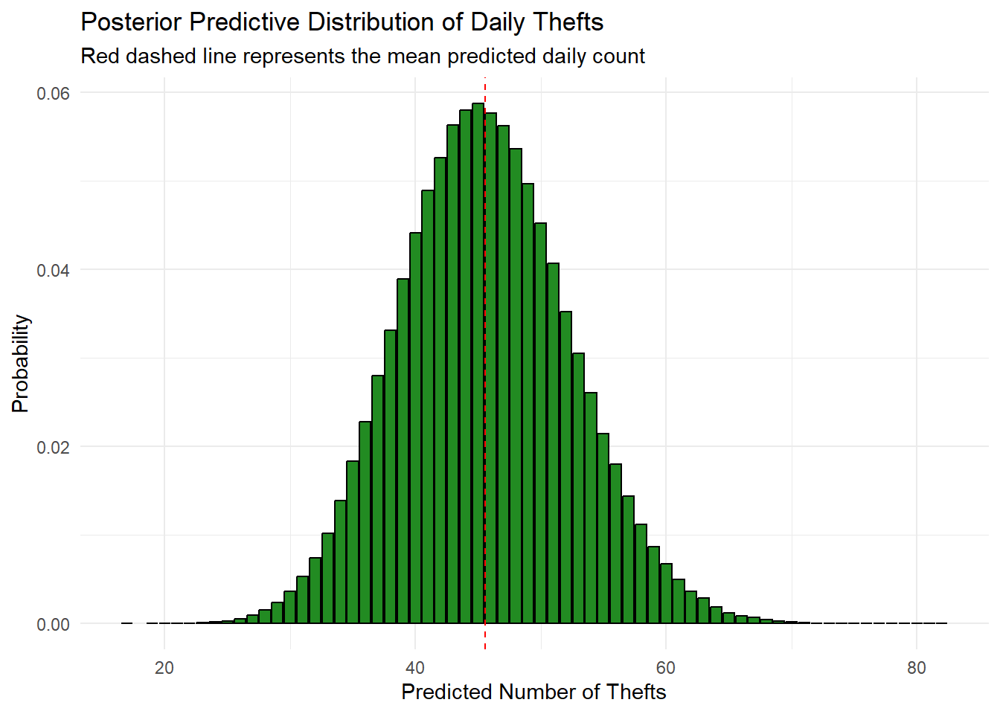
The constructed posterior predictive distribution seems to be centered at a mode and have slight right skew seen by how the mean is to the right of the mode.
45 vehicles will be stolen in Chicago tomorrow
If we wanted to predict the single best number for the number of cars stolen tomorrow the mode of the distribution would be the best estimate.
The most likely value is 45 with a probability of 0.058756.
summary(predictive_df)
thefts
Min. :17.00
1st Qu.:41.00
Median :45.00
Mean :45.57
3rd Qu.:50.00
Max. :82.00
On average we should see the rate of 45.57 cars stolen per night and a 50% chance of having less than or equal to 45 cars stolen.
3. Which Chicago community areas have the highest probability of at least one motor vehicle theft tomorrow?
The dataset consists of reported motor vehicle theft incidents in Chicago during 2026, obtained from the Chicago crime data portal. Each row corresponds to a single reported theft. For the purposes of this analysis, the data were aggregated to obtain the number of theft incidents per community area per day. This allows us to model theft counts as daily events occurring within each neighborhood.
Model Specification
Let \(Y_{jt}\) denote the number of motor vehicle theft incidents in community area \(j\) on day \(t\).
We model the number of thefts using a Poisson distribution:
\[
Y_{jt} \sim \text{Poisson}(\lambda_j)
\]
where \(\lambda_j\) represents the average daily motor vehicle theft rate in community area \(j\).
To complete the Bayesian model, we specify a prior distribution for the unknown daily motor vehicle theft rate in each community area.
Let \(\lambda_j\) represent the average number of motor vehicle theft incidents per day in community area \(j\). Because theft counts are modeled using a Poisson likelihood, we use a Gamma prior for \(\lambda_j\):
\[
\lambda_j \sim \text{Gamma}(\alpha, \beta)
\]
The Gamma distribution is chosen because it is conjugate to the Poisson likelihood. This conjugacy allows the posterior distribution to be obtained analytically and simplifies computation.
Prior Evidence
Historical motor vehicle theft data from the Chicago offense dashboard indicate that in June 2025 there were 1,473 reported motor vehicle theft incidents, which corresponds to approximately 49 incidents per day citywide. Since Chicago contains 77 community areas, a rough baseline rate for a typical community area is:
\[
\frac{49}{77} \approx 0.64
\]
motor vehicle theft incidents per day.
To incorporate this information while maintaining substantial uncertainty, we use the prior
which reflects the approximate historical daily theft rate for a typical neighborhood while still allowing the observed 2026 data to strongly influence the posterior distribution.
Posterior Distribution
Let \(Y_{jt}\) denote the number of motor vehicle theft incidents observed in community area \(j\) on day \(t\). We assume that theft counts follow a Poisson distribution:
\[
Y_{jt} \sim \text{Poisson}(\lambda_j)
\]
where \(\lambda_j\) represents the average daily motor vehicle theft rate in community area \(j\).
Suppose that across \(T\) observed days in 2026 we observe a total of \(y_j\) theft incidents in community area \(j\).
Given the Poisson likelihood and the Gamma prior
\[
\lambda_j \sim \text{Gamma}(\alpha,\beta)
\]
the posterior distribution is also a Gamma distribution:
This posterior distribution represents our updated belief about the daily motor vehicle theft rate in community area \(j\) after incorporating the observed 2026 theft data.
which balances the historical prior information with the observed theft counts. Community areas with larger observed theft counts will have higher posterior rate estimates, while areas with fewer observations will be partially stabilized by the prior distribution.
Data Summary
The dataset contains reported motor vehicle theft incidents in Chicago from January 1, 2026 to February 22, 2026, covering a total of 53 days of observations.
For each community area, we aggregate the data to obtain the number of theft incidents occurring on each day. This produces daily theft counts that can be modeled as event counts over time.
Rows: 2369 Columns: 22
── Column specification ────────────────────────────────────────────────────────
Delimiter: ","
chr (12): Case Number, Date, Block, IUCR, Primary Type, Description, Locatio...
dbl (8): ID, Ward, Community Area, X Coordinate, Y Coordinate, Year, Latitu...
lgl (2): Arrest, Domestic
ℹ Use `spec()` to retrieve the full column specification for this data.
ℹ Specify the column types or set `show_col_types = FALSE` to quiet this message.
# Compute number of thefts per day in each areadaily_counts <- crime %>%filter(!is.na(community_area)) %>%group_by(community_area, day) %>%summarise(thefts =n(), .groups ="drop")daily_counts %>%head(10)
# If a neighborhood had no theft on a certain day, that day still counts. Otherwise our daily rate will be too high.# So we build a full grid of all community areas × all days.all_days <-seq(min(crime$day, na.rm =TRUE), max(crime$day, na.rm =TRUE), by ="day")all_areas <- crime %>%filter(!is.na(community_area)) %>%distinct(community_area)daily_complete <-expand_grid(community_area = all_areas$community_area,day = all_days) %>%left_join(daily_counts, by =c("community_area", "day")) %>%mutate(thefts =replace_na(thefts, 0))daily_complete %>%head(10)
# Compute total thefts and observed days for each areaarea_summary <- daily_complete %>%group_by(community_area) %>%summarise(total_thefts =sum(thefts),days_observed =n(),sample_daily_mean =mean(thefts),.groups ="drop" ) %>%arrange(desc(total_thefts))area_summary %>%head(10)
The posterior estimates show substantial variation in daily motor vehicle theft rates across Chicago communnity areas. Using the Gamma–Poisson model with a prior informed by historical Chicago theft trends, we estimated the posterior daily theft rate for each community area based on the 53 days of observed data in 2026.For example, community area 28 had the highest posterior mean daily theft rate. Across the 53 observed days, this area experienced 131 theft incidents, corresponding to an estimated posterior mean of 2.37 thefts per day. Additionally, given the model and the data, there is an 80% probability that the true average daily theft rate in this area lies between approximately 2.11 and 2.64 thefts per day.
An example posterior plot:
# Prioralpha <-2beta <-2/0.64# Data for Area 28T_days <-53y_28 <-131plot_gamma_poisson(shape = alpha,rate = beta,n = T_days,sum_y = y_28)
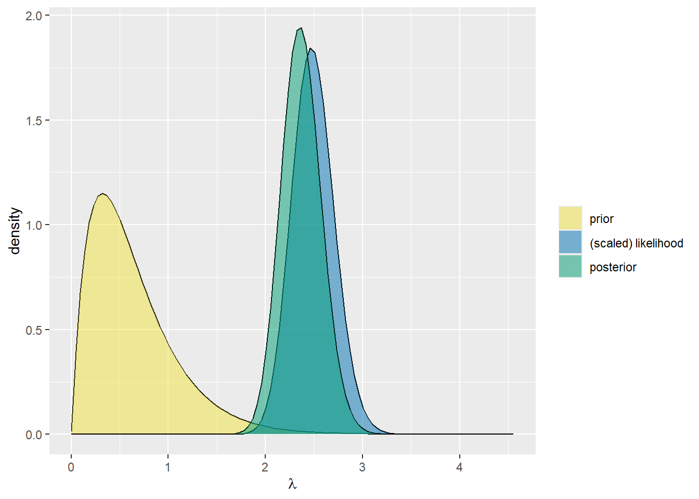
Figure 2. Posterior distribution for community area 28
For area 28, the posterior distribution is shifted noticeably to the right of the prior, indicating that the observed 2026 data suggest a higher daily theft rate than the baseline prior expectation. The posterior is also narrower than the prior, showing that the 53 days of observed data reduce uncertainty about the true rate.
These posterior rate estimates are then used to generate posterior predictive simulations for tomorrow’s theft counts. From these simulations, we compute the probability that at least one theft occurs in each community area tomorrow, allowing us to identify neighborhoods with the highest short-term risk of motor vehicle theft.
Predictive Simulation
While the posterior distribution describes the uncertainty in the underlying theft rate \(\lambda_j\), our primary goal is to predict future theft incidents.
Let
\[
Y_{j,\text{tomorrow}}
\]
denote the number of motor vehicle theft incidents that occur tomorrow in community area \(j\).
The posterior predictive distribution is defined as
\[
P(Y_{j,\text{tomorrow}} \mid data)
\]
which integrates over the uncertainty in the theft rate parameter \(\lambda_j\).
To approximate this distribution, we use simulation:
Draw \(\lambda_j\) from the posterior distribution
Simulate a theft count from a Poisson distribution with rate \(\lambda_j\)
Repeat this process many times
This produces simulated values of \(Y_{j,\text{tomorrow}}\) that approximate the posterior predictive distribution.
A useful risk measure derived from this distribution is
\[
P(Y_{j,\text{tomorrow}} \ge 1 \mid data)
\]
which represents the probability that at least one motor vehicle theft occurs tomorrow in community area \(j\). Community areas with the highest values of this probability are identified as the neighborhoods with the highest predicted short-term theft risk.
posterior_mean = estimated average thefts per day in that area
pred_mean = predicted number of thefts tomoorrow
prob_at least_1 = probability of at least 1 theft tomorrow
prob_at least_2 = probability of at least 2 or more theft tomorrow
# join area using code from the data to make further interpretation area_lookup <-tribble(~community_area, ~neighborhood,8, "Near North Side",23, "Humboldt Park",24, "West Town",25, "Austin",28, "Near West Side",32, "Loop",35, "Douglas",43, "South Shore",44, "Chatham",71, "Auburn Gresham")results_named <- top_risk %>%left_join(area_lookup, by ="community_area") %>%mutate(area_label =paste0(neighborhood, " (", community_area, ")") )
# visualize resultsggplot( results_named %>%arrange(prob_at_least_1),aes(x =reorder(area_label, prob_at_least_1), y = prob_at_least_1)) +geom_col() +coord_flip() +scale_y_continuous(labels =percent_format(accuracy =1), limits =c(0, 1)) +labs(title ="Predicted probability of at least one motor vehicle theft tomorrow",subtitle ="Top 10 Chicago community areas from posterior predictive simulation",x ="Community area",y ="Probability" )
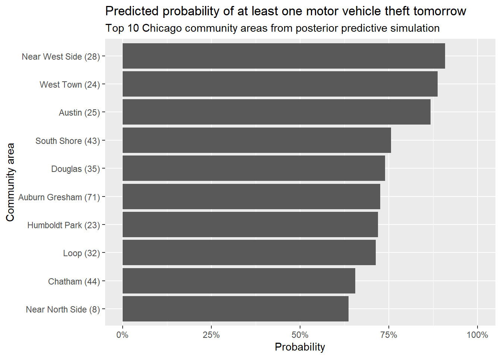
Figure 3. Visualization of posterior predictive probability of at least one motor vehicle theft occurring tomorrow for top 10 high-risk areas in Chicago.
Results
Using the Bayesian Gamma–Poisson model, we estimated the daily motor vehicle theft rate for each Chicago community area and generated posterior predictive simulations to estimate the probability of future theft incidents. These predictions allow us to identify neighborhoods with the highest short-term theft risk.
The results indicate that Near West Side (Community Area 28) has the highest predicted risk of motor vehicle theft. Over the 53 observed days, this area experienced 131 theft incidents, producing a posterior mean estimate of 2.37 thefts per day. Posterior predictive simulations suggest an expected value of approximately 2.38 thefts tomorrow, with a 90.8% probability of at least one theft occurring tomorrow and a 68.2% probability of two or more thefts.
The next highest risk area is West Town (Community Area 24), which recorded 121 theft incidents during the observation period. The posterior mean daily theft rate is 2.19 thefts per day, and the predicted probability of at least one theft tomorrow is approximately 88.8%, with a 64.5% probability of at least two thefts.
Similarly, Austin (Community Area 25) shows elevated theft risk. With 113 observed incidents, the posterior mean theft rate is estimated at 2.05 thefts per day, corresponding to an 86.8% probability of at least one theft tomorrow.
Several other neighborhoods also demonstrate substantial predicted theft risk. For example, South Shore (Community Area 43) has a posterior mean rate of 1.43 thefts per day and a 75.6% probability of at least one theft tomorrow. Douglas (Community Area 35) and Auburn Gresham (Community Area 71) have posterior mean daily theft rates of approximately 1.32 and 1.30 thefts per day, with predicted probabilities of at least one theft tomorrow of 73.9% and 72.6%, respectively.
Other areas in the top-risk group include Humboldt Park (Community Area 23) and Loop (Community Area 32), both of which show posterior mean daily theft rates slightly above 1.24 thefts per day, corresponding to predicted probabilities of at least one theft tomorrow of approximately 71–72%.
Even neighborhoods with comparatively lower estimated rates still exhibit notable theft risk. For example, Chatham (Community Area 44) and Near North Side (Community Area 8) have posterior mean daily theft rates of approximately 1.07 and 1.03 thefts per day, respectively. These rates correspond to predicted probabilities of at least one theft tomorrow of 65.5% and 63.7%.
Overall, the posterior predictive results suggest that several Chicago neighborhoods consistently experience higher daily motor vehicle theft rates.
Model Evaluation
To assess model performance, we conducted posterior predictive checks by generating replicated datasets from the fitted Gamma–Poisson model. For each community area, we simulated theft counts across the 53-day observation period using posterior draws of the daily theft rate.
# visualize ppcggplot(ppc_summary,aes(x = sim_mean, y = total_thefts)) +geom_point(size =3) +geom_abline(slope =1, intercept =0, color ="red") +labs(title ="Posterior Predictive Check",subtitle ="Observed vs simulated theft counts",x ="Simulated mean theft counts",y ="Observed theft counts" ) +theme_minimal()
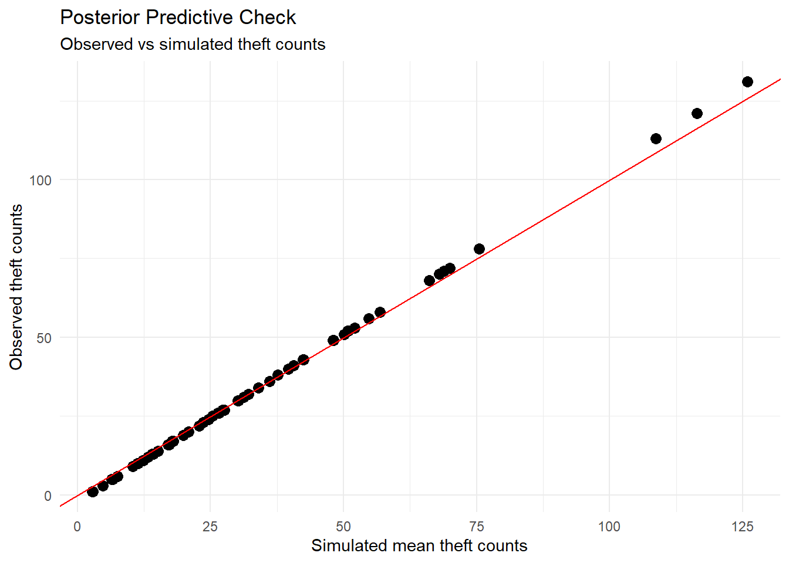
Figure 4. Relationship between the simulated mean theft counts and the observed theft counts across community areas.
Most points lie close to this diagonal which indicates that the simulated data generated by the model closely match the observed counts. This suggests that the Gamma–Poisson model captures the overall pattern of motor vehicle theft incidents across Chicago neighborhoods.
Some neighborhoods with very high theft counts show slightly higher observed values than predicted, suggesting that the model may slightly underestimate extreme theft counts. This may reflect mild overdispersion in the data relative to the Poisson assumption. However, the deviations are small, and overall the posterior predictive check indicates that the model provides a reasonable fit to the observed data.
Discussion and Limitations
While the Bayesian Gamma–Poisson model provides a useful framework for estimating and predicting motor vehicle theft risk, several limitations should be considered when interpreting the results.
The dataset used in this analysis covers only 53 days of observations (January 1 to February 22, 2026). Because crime patterns may vary seasonally, the observed theft rates during this short time window may not fully represent long-term patterns throughout the year. For example, vehicle theft rates may change during summer months or holiday periods when vehicle usage patterns differ.
The model assumes that theft incidents within each community area follow a Poisson process with a constant daily rate. This assumption implies that events occur independently and that the average theft rate does not change over the observed period. In reality, theft incidents may be influenced by factors such as police activity, local events, economic conditions, or organized crime patterns, which may introduce temporal variation that the model does not explicitly capture.
The analysis relies on reported motor vehicle theft incidents from the Chicago crime dataset. Not all theft incidents may be reported to law enforcement, and reporting rates may vary across neighborhoods. As a result, the observed counts may underestimate the true number of theft incidents.
The prior distribution used in the model is based on historical citywide theft statistics, rather than neighborhood-specific historical data. While this provides a reasonable baseline estimate for the typical daily theft rate, it may not fully reflect local variations between community areas.
Despite these limitations, the framework have several advantages. Combining prior and observed data stabilizes estimates in neighborhoods with limited observations and allows uncertainty in the theft rates to be formally quantified. The posterior predictive simulations also provide interpretable risk measures, such as the probability that at least one theft occurs tomorrow, which can be used to compare short-term theft risk across neighborhoods.
Future work could extend this analysis by incorporating longer time periods, seasonal effects, or additional predictors such as socioeconomic variables, traffic patterns, or law enforcement activity. More advanced hierarchical or spatial Bayesian models could also be used to capture correlations between neighboring areas and improve risk prediction.
4. Does the probability of arrest for motor vehicle theft vary by community area in Chicago in 2026?
Here, we investigate whether the probability of arrest for vehicle theft differs by community area in Chicago.
We start with defining a Bayes model. A natural choice is a Beta Binomial model. We define:
\(y_j\) = number of motor-vehicle-theft incidents that resulted in an arrest in area \(j\).
\(n_j\) = total number of motor-vehicle-theft incidents in area \(j\).
\(\pi_j = P(\text{arrest} \mid \text{MVT in area } j)\).
Nationally, only about 10% of vehicle thefts result in an arrest. We can start with this assumption and set our prior to about \(\pi_j \sim \text{Beta}(2, 18)\), which has a mean of 0.1.
As we can see from this table, between-group posterior means are quite different. Comparing between district 12 and district 11 for instance, we can see quite a large difference.
plot_beta_binomial(2, 18, y=0, n=213)
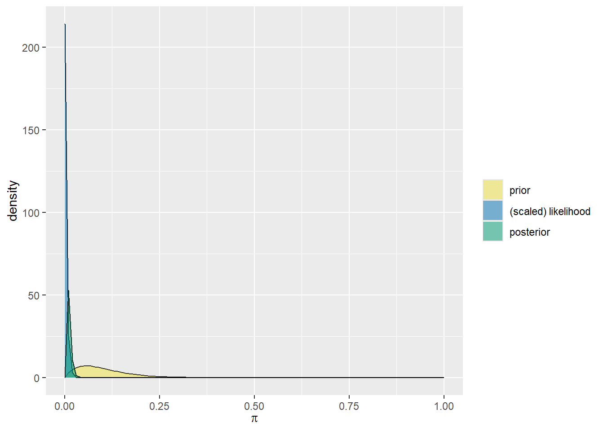
plot_beta_binomial(2,18,y=10,n=128)
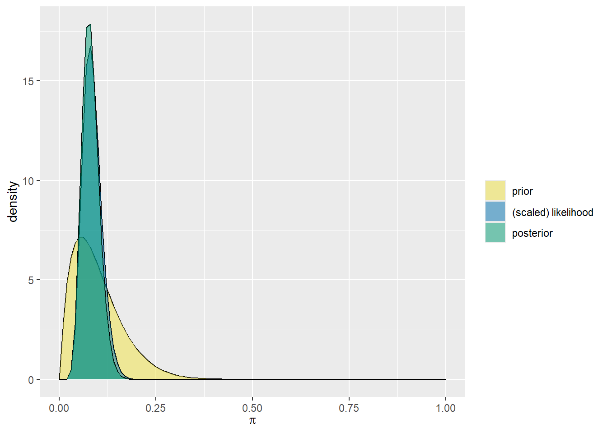
district_posteriors %>%arrange(posterior_mean) %>%mutate(District =factor(District, levels = District)) %>%ggplot(aes(x = posterior_mean, y = District)) +geom_point() +geom_errorbarh(aes(xmin = ci_lower, xmax = ci_upper), height =0.2) +labs(title ="Posterior Arrest Probability by District",x ="Posterior Mean Arrest Probability",y ="District" ) +theme_minimal()
Warning: `geom_errorbarh()` was deprecated in ggplot2 4.0.0.
ℹ Please use the `orientation` argument of `geom_errorbar()` instead.
`height` was translated to `width`.
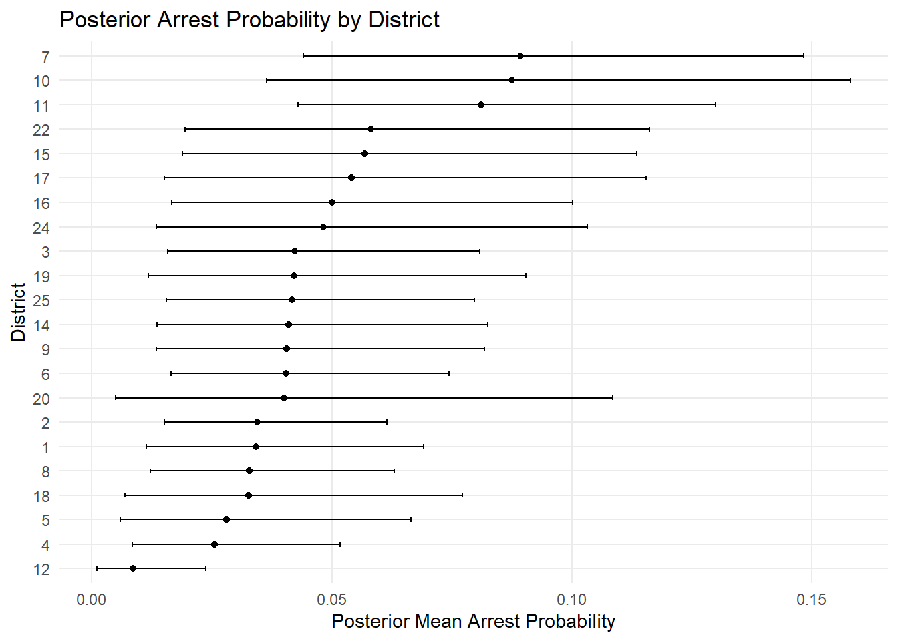
Using a Beta(2,18) prior centered at a 10% arrest rate, we updated our beliefs about the arrest probability for motor vehicle theft in each district. We have plotted the confidence intervals for each district above,
Now we’d like to statistically compute whether arrest proportions differ by district in Chicago. Formally, we compute \(P(\pi_i > \pi_j)\) for all pairs of district i and district j. In order to do this, we sample from the posterior distribution of each district and compare the samples.
set.seed(123)num_samples <-5000district_names <- district_posteriors$Districtnum_districts <-length(district_names)# Generate samples for each districtposterior_samples <-lapply(1:num_districts,function(i){rbeta( num_samples, district_posteriors$alpha_post[i], district_posteriors$beta_post[i] ) })
Next, we compare every pair of districts and compute the probability that one has a higher arrest rate than the other.
From this heatmap we can see that there are several districts with pairwise probability of higher arrest rates being above 0.95. It is clear that the posterior distributions of arrest rates for motor vehicle thefts differ by district.
##Sources Cited
Bishop, Lindsay. “Vehicle Theft Statistics by State — and Most Stolen Cars and Motorcycles.” ValuePenguin, 25 Nov. 2025, www.valuepenguin.com/motor-vehicle-theft-statistics.
Federal Bureau of Investigation. “National Incident-Based Reporting System (NIBRS) — Offense Categories and Data Tools.” FBI Crime Data Explorer, 2024, https://nibrs.fbi.gov/
Federal Bureau of Investigation. “FBI Releases Data on Motor Vehicle Theft: 2019–2023.” FBI News & Press Releases, 17 Oct. 2024, https://www.fbi.gov/news/press-releases/fbi-releases-motor-vehicle-theft-2019-2023
“Facts + Statistics: Auto Theft | III.” Iii.org, Insurance Information Institute, 2017, www.iii.org/fact-statistic/facts-statistics-auto-theft. Dr. Andrew Schiller. “Chicago, IL Crime Rates.” Neighborhoodscout.com, NeighborhoodScout, 24 Sept. 2019, www.neighborhoodscout.com/il/chicago/crime.
“Monthly Auto Thefts, Last 5 Years | City of Chicago | Data Portal.” Cityofchicago.org, 2018, data.cityofchicago.org/Public-Safety/Monthly-Auto-Thefts-Last-5-Years/p6d7-vxbu.